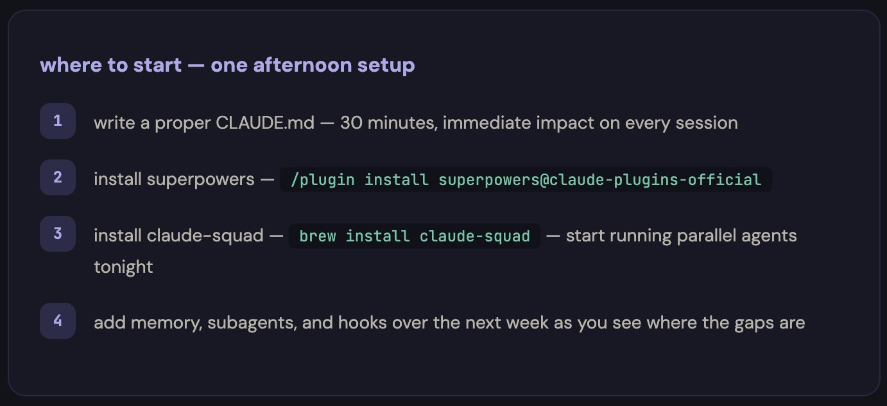

如何将我的 Claude 代码工具变成 24/7 全天候开发团队（完整指南 + 仓库）
在当今的软件开发领域，许多开发者习惯于将 Claude 代码当作普通的聊天机器人来使用。然而，通过一些巧妙的设置和优化，我成功地将其改造为一个24/7 全天候、智能且高效的开发团队。这个团队不仅能够记住你的项目细节，还能在你休息时自动执行任务，甚至随着每次会话不断进化，真正成为你开发工作中的得力助手。
如果你也想让 Claude 代码为你服务，不妨收藏本文，因为它包含了从基础配置到高级优化的完整流程。接下来，我将详细分享我是如何一步步搭建这套系统的，以及每个环节的关键点。
第一部分：CLAUDE.md——奠定基础的核心文件
在开始任何优化之前，你需要了解一个至关重要的文件：CLAUDE.md。它位于项目的根目录下，是 Claude 代码每次会话启动时都会读取的唯一配置文件。简单来说，它是你与 Claude 沟通的“说明书”，用来明确你的项目背景、技术栈、编码规范以及当前的工作重点。
为什么大多数人会忽略或写错 CLAUDE.md？
很多开发者直接跳过这一步，或者只是草草地写上一句“这是一个 React 应用，请多帮忙”。这样的做法毫无意义，因为 Claude 无法从中提取任何有价值的信息。相反，正确的配置方式应该像下面这样：
## CLAUDE.md
## 项目
- 技术栈：Next.js 14、TypeScript、Tailwind CSS，通过 Prisma 使用 PostgreSQL
- 部署在 Vercel 上，staging 分支会自动部署
- 单体仓库：/apps/web、/apps/api 和 /packages/shared
## 规范
- 所有组件采用 PascalCase 命名法
- API 路由返回 { data, error } 格式
- 除页面外，不使用默认导出
- 测试文件与源码文件同级，命名规则为 *.test.ts
- 提交信息遵循 conventional commits 标准（feat:、fix:、chore: 等）
## 架构决策
- 2024 年 12 月选择 Prisma 而不是 Drizzle：优先考虑类型安全
- 2025 年 1 月选择 Zustand 而不是 Redux：减少样板代码
- 使用 Clerk 进行身份验证，而非 NextAuth：更适合我们团队规模的开发体验
## 当前重点
- 将支付系统从 Stripe Checkout 运作模式切换到 Stripe Elements 模式
- 对 /dashboard 进行性能审计（目标：LCP < 2 秒）
## 规则
- 未经提前展示计划，绝不批量修改超过 3 个文件
- 撰写新测试之前，务必先运行现有测试
- 如果任务超过 5 个步骤，必须先创建一份计划文档
效果显著：告别重复说明
一旦正确配置了 CLAUDE.md，Claude 便能准确理解你的项目背景、技术栈和编码规范，而无需你在每次会话中反复解释这些内容。这种清晰的沟通方式极大地提升了效率，让你可以专注于更重要的任务。
第二部分：持久化存储——让 Claude 记住一切
尽管 CLAUDE.md 提供了基础信息，但默认情况下，Claude 代码在不同会话之间并不会保留任何记忆。这意味着每次对话都像是从零开始，你不得不重新说明上下文、修正问题或寻找解决方案。为了解决这一问题，我采用了以下三种工具协同工作的方案：

1. Obsidian 作为知识库
我专门搭建了一个结构化的 Obsidian 维基，用于记录项目中的关键决策、遇到的 bug、有效的代码模式以及每日会话的摘要。这个维基不仅是 Claude 的数据来源，也是它的存储空间。通过这种方式，Claude 能够在不同会话之间持续学习和积累知识。
以下是我的 Obsidian 仓库结构：
/vault
/decisions — 每项架构决策及其背景信息
/errors — 记录遇到的 bug 及其解决方法
/patterns — 我们代码库中有效的代码模式
/sessions — 每日会话摘要
/stack — 我们使用的每种工具的文档
Memory.md — 关于我的个人情况、项目背景及偏好
index.md — 整个仓库的总索引
2. claude-mem——实现会话持久化
claude-mem 是一个基于压缩技术的工具，能够在每次会话结束时将关键决策和上下文保存下来，以便在下次会话中继续使用。这样一来，Claude 不再需要从头开始，而是可以直接利用之前的学习成果。
3. subconscious 代理——后台记忆助手
claude-subconscious 是一个强大的后台代理，能够监控你的代码文件、记录会话内容，并逐步构建长期记忆。它就像一位默默无闻的初级开发人员，始终陪伴在你身边，确保 Claude 能够记住所有重要的细节。
通过这三者的结合，Claude 代码终于具备了跨会话的记忆能力。现在，当你周一早上再次打开它时，它已经清楚地记得周五你在调试支付 Webhook 中遇到的竞态条件，以及当时决定从轮询切换到 WebSocket 的过程。这一切都不需要你额外提醒，Claude 自己就能记住并应用这些信息。
第三部分：Skills——从通用型助手到专业型助手
开箱即用的 Claude 代码虽然功能强大，但它更像是一个万金油式的助手，什么都能做，却缺乏深度的专业性。为了弥补这一点，我们需要引入 Skills，这是一种 Markdown 文件形式的插件系统，能够让 Claude 专注于特定的任务类型。
Superpowers——开发方法论的全面升级
Superpowers 是一个拥有超过 17 万颗 GitHub 星标的插件，正式入驻 Anthropic 插件市场。它将 Claude 的功能从简单的“按需写代码”转变为一套完整的开发流程，包括头脑风暴、需求分析、任务规划、TDD 测试驱动开发、实现和代码审查等步骤。
安装 Superpowers 后，Claude 不会直接开始编码，而是会按照严格的流程推进工作。例如，它会先询问你具体的需求，生成一份详细的文档供你确认；接着制定一个清晰的任务计划；最后以 TDD 的方式完成编码，并确保所有测试都通过。
安装命令：
/plugin install superpowers@claude-plugins-official
其他实用 Skills
除了 Superpowers，我还添加了以下几种 Skills，进一步提升 Claude 的专业能力：
Trail of Bits 安全技能：由真正的安全工程师开发，能够自动扫描 PR 中的潜在漏洞。
安装命令：
/plugin install trail-of-bits-security-skills@claude-plugins-officialAnthropic 官方 Skills：提供 PDF、DOCX、XLSX 文件生成以及数据分析等功能，是其他 Skills 的基础参考标准。
安装命令：
/plugin install official-anthropic-skills@claude-plugins-officialTDD-Guard：自动阻止未通过测试的提交，同时解释原因并提示需要补充哪些测试。
安装命令：
/plugin install tdd-guard@claude-plugins-official
通过叠加多种 Skills，Claude 代码逐渐从一个通用型助手蜕变为一个高度专业的开发伙伴。你可以根据自己的需求选择合适的 Skills，它们之间互不冲突，共同打造出符合你工作流程的理想助手。
第四部分：子代理——让 Claude 化身多个开发专家
如果说前面的步骤是为 Claude 打造“大脑”的话，那么子代理则是赋予它“四肢”的关键所在。通过子代理，我们可以将一个 Claude 代码实例拆分为多个独立的代理，每个代理负责不同的任务，从而实现并行处理和高效协作。
例如，我可以同时运行五个子代理：
- 代码编写代理：专注于实现具体的代码功能。
- 测试代理：负责编写和运行单元测试。
- 文档生成代理：自动生成 API 文档或用户手册。
- 性能优化代理：分析代码性能瓶颈并提出改进建议。
- 安全审计代理：检查代码中的潜在漏洞并提供建议。
这种多代理架构不仅大幅提升了工作效率，还使得 Claude 能够同时处理多项复杂任务。更重要的是，这些子代理可以在你睡觉时继续工作，真正实现 24/7 全天候开发支持。
以上就是我将 Claude 代码打造成 24/7 开发团队的完整过程。从基础配置到高级优化，每一个环节都至关重要。接下来，我将详细介绍如何将这些设置整合到实际项目中，并附上完整的代码示例和仓库链接，帮助你快速上手。
第二部分：子代理架构与职责分离
单个 Claude 代码会话在同一时间只能处理一项任务。你要它先写一个功能，再审查代码，接着修复一个 bug，最后写文档——它会依次完成每一项工作，但到了第四项任务时，上下文早已被前面的内容污染了。
为了解决这一问题，子代理模式应运而生。与其让一个 Claude 负责过多事务，不如组建一支由多个专业代理组成的团队，每个代理都有自己的上下文和单一职责。这种分工不仅提高了效率，还确保了每项任务都能得到专注处理。
在我的设置中，我采用了五种不同角色的子代理：
- 架构师：负责高层次的设计决策、编写需求文档和实施计划，但从不直接接触代码。
- 编码员：根据架构师的计划编写实际代码，拥有完整的工具访问权限。
- 审查员：以安全为首要原则审查每一个 PR，标记问题、提出改进建议，并检查测试覆盖率。
- 测试员：负责编写和运行测试，严格执行 TDD 流程，并与 TDD-Guard 紧密配合，确保所有代码都经过充分测试。
- 运维人员：负责部署、CI/CD 和基础设施管理，监控构建过程，及时修复失败。
每个代理都有自己专属的 CLAUDE.md 文件，其中包含具体的指令、工具权限和上下文范围。例如，编码员看不到部署配置，而审查员也不会编写代码，从而实现了清晰的职责分离。
如果你希望快速上手，可以参考以下两个开源项目：
- wshobson/agents：这是一套生产级子代理集合，涵盖了战略、开发、安全和设计等多个领域，目前已有2.5万+颗星。
- davepoon/claude-code-subagents-collection：该仓库提供了100多个子代理，可以直接应用于各种工作流程。
通过这些现成的解决方案，你可以迅速搭建起属于自己的子代理团队，大幅提升开发效率！
第三部分：钩子与斜杠命令：自动化重复性工作
每当你发现自己第三次输入同样的指令时，就意味着有一个新的斜杠命令即将诞生。
基于这一理念，我精心设计并实现了以下几条实用的斜杠命令，它们极大地简化了我的日常工作流程：
/fix-issue 456：这条命令能够自动读取指定的 GitHub 问题，创建分支，编写修复代码并加入测试，最后打开 PR。只需一条命令，就能替代原本需要10分钟才能完成的工作流程。/review：此命令会触发审查员代理，对当前 PR 进行安全检查、测试覆盖率分析以及代码质量评分，帮助团队快速评估代码质量。/deploy staging：这条命令调用运维代理，执行完整的部署流水线，确保应用顺利上线到预发布环境。
如果你想进一步提升工作效率，还可以参考这套包含57条生产级命令的完整集合：
claude-commands，该项目已获得1.7万+颗星，覆盖了15种工作流程和42种常用工具。
除了斜杠命令，钩子功能同样不可或缺。它们能够在特定时刻自动触发，无需人工干预：
- pre-commit 钩子：TDD-Guard 会在任何提交进入代码库之前检查测试是否通过，确保代码质量。
- session start 钩子：从 Obsidian 加载记忆，读取最近的会话日志，初始化上下文，为后续工作做好准备。
- pre-push 钩子：在代码推送到远程仓库之前，自动进行安全审查，防止潜在风险上传。
通过这些自动化机制，你不再需要反复提醒 Claude 每个步骤的具体要求，因为规则已经内置在系统中，随时生效。
第四部分：编排工具：让代理高效协作
这是整个系统中最关键的一环，也是将每月20美元的订阅费用转化为一支高效开发团队的核心所在。
claude-squad 是一款专为并行运行多个 AI 代理而设计的终端多路复用器。它利用 Git worktrees 为每个代理分配独立的工作区，使他们在不同的分支上工作，互不干扰。
安装方法非常简单：
brew install claude-squad
cs
安装完成后，你就可以通过一个直观的 TUI 界面来启动、监控、暂停和恢复各个代理。即使关闭终端，这些代理也会继续工作。第二天早上醒来，你会发现已完成的 Pull Request 已经等待审核。

在我的日常使用中，我会在睡前打开 claude-squad，启动三个会话：
- 代理 1：“修复仓库中所有标记为 'bug' 的未解决问题”
- 代理 2：“为 /apps/api/src/services/ 缺失的模块补写测试”
- 代理 3：“将仪表盘组件重构为使用新的设计令牌”
对于可信的任务，我会启用自动接受模式（cs -y）；而对于风险较高的任务，则切换到计划模式。
随后，我合上笔记本电脑，安心入睡。第二天早上醒来，就有三个 PR 等待审查。每个 PR 都位于各自的分支上，完全没有冲突，测试也全部通过。
如果需要更高级的编排功能，可以尝试以下两个项目：
ruvnet/claude-flow：这款工具支持企业级多代理编排，并具备持久化内存功能，目前已收获11.4万+颗星。
注意：虽然链接重复出现两次，但这里仅保留一次引用。
通过这些工具，你可以轻松实现复杂任务的自动化调度，让 Claude 代理们像一支默契十足的开发团队一样协同工作。
第五部分：整体架构与成本分析
为了更好地理解这套系统的运作方式，以下是各层组件的详细说明：
第 1 层：CLAUDE.md — 免费（只是一个文件）
第 2 层：Obsidian + claude-mem — 免费（Obsidian 是免费的，相关仓库均为开源）
第 3 层：Superpowers + Skills — 免费（全部开源，MIT 许可证）
第 4 层：子代理 — 免费（Markdown 文件）
第 5 层：钩子 + 命令 — 免费（全部开源）
第 6 层：claude-squad — 免费（开源）
基础设施总成本：$0
Claude 代码订阅费用：$20/月（Pro 方案）
从清单中可以看出，几乎所有组件都是开源且免费的，你唯一需要支付的费用就是 Claude 的订阅服务。然而，这笔投入所带来的回报却是巨大的——无论是生产力的提升，还是工作流程的优化，都足以证明其价值。
为了更直观地展示改造前后的效果，我特意对比了两周内的工作数据：

每天浪费的47分钟？如今已经完全消失！更重要的是，这些智能代理能够在凌晨3点完成我过去下午3点才做的工作，真正实现了“人歇机器不歇”的高效开发模式。
Bonus：从哪里开始？
搭建如此复杂的系统听起来可能有些 daunting，但实际上，你并不需要一次性完成所有六层的配置。相反，可以从最基础的三层开始，只需一个下午的时间即可搞定：

这个配置是我花了整整三个月才摸索出来的，但其实你完全可以更快上手。不妨先从简单的 CLAUDE.md 文件、Obsidian 日记和一些基本的子代理开始，逐步完善你的开发流程。
那么，你现在使用的 Claude 代码配置是怎样的呢？欢迎在评论区分享你的经验，或者关注 @regent0x_，一起探索更多关于 AI 开发的前沿技术！
感谢你的阅读，别忘了收藏这篇文章哦！